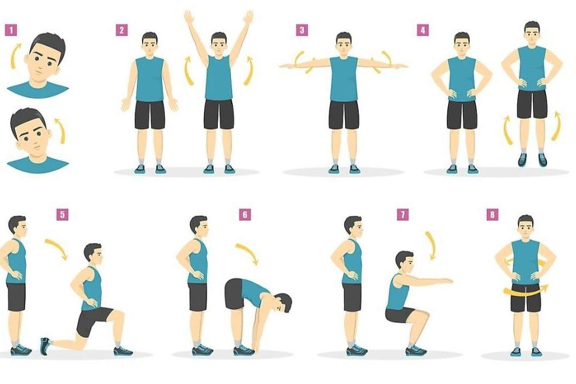

In the Software Engineering class, it felt like a very brief but adequately balanced tour of all the aspects that a software engineer would need to develop oneself individually in the work field. Everything from the big three of web development coding (HTML, CSS, JS) to frameworks, open source development, and ethics played a major role in solidifying what it meant to be a software engineer. From foundational web development languages to advanced concepts, the course went beyond the creation of websites, emphasizing the cultivation of a mindset essential for problem-solving and continuous learning.
Last week we had our first WOD in class, and I did all that I could in order to prepare. In preparing, I made sure to correlate what seemed to be emphasized in the practice WODs as well as what I should gain from all the practice WODs together so that I would be able to pass the actual WOD. I relearned that one is only prepared after they experience being stumped and frustrated in the first attempts of attempting a task. Only through asking why they were stuck and trying to adopt a new mindset that works for the job does one breakthrough and succeed.
Having completed the WOD made me feel overjoyed, but I knew this was the beginning and that I would have to go back and seek improvement the same way as if I was not able to finish the WOD. It was discussed and emphasized that we should learn not only to create code that works, but code that we know is a good choice for a given situation’s requirements. Although I created code that worked and passed the exercise, I did not feel I put time into that extra thought a Software Engineer would, and that kind of thinking is what I can improve for the next WOD.
This experience was definitely valuable as part of our experiencial learning. I felt the success, but knew that it might not be enough for the next time, and that more time will always be needed to have sufficient programming skills.
I chose to implement my function as specified by the WOD in a way that would simply complete the task and output the exact same thing to the console as the example was written. This was successful as I already mentioned, but it was discussed after that functions should be thought about mattering on the input that can be passed in, and if the function can still have a general working task even with more than one value passed in.
Different scenarios call for slightly different implementation, and a big topic discussed was the usage of a loop inside or outside of the function itself. Personally I used a function with an internal loop, because I believe that the instructions explicitly asked for that, but nonetheless there would always be that extra thought into how that affects the overall utility of the function.
I personally would have put more thought into why we would implement the WOD as a function, and would probably loop outside of the function to extend capability and change the limits of the range. On top of that, I would also think about how to order priority of conditional statements to make sure nothing is redundant.
This WOD opened my eyes to what it means to know code and what it means to think like a Software Engineer. Therefore I absolutely think it is extremely valuable to discuss every WOD after completion. Besides the general cases of why one implementation is more effective than others, it is good to think about how we can expand my way of thinking so that ultimately I can accommodate any type of specifications or instructions I am given for a program in the future. I hope to incorporate this perspective into the next WOD period, starting all the way from my preparation. Very importantly, I should not stop practicing as much as I did for this first WOD, since any lack of practice can penalize my completion of the next WODs.